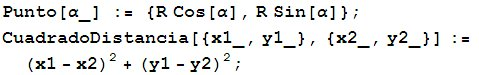
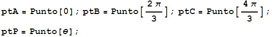
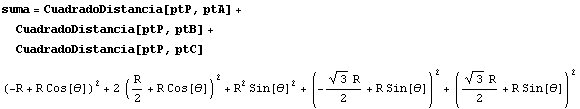
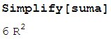

|
Si un triángulo equilátero está inscrito en una circunferencia, la suma de los cuadrados de los segmentos que unen cualquier punto de la circunferencia a los tres vértices del triángulo es constante. |
|
Brockway, G. E. (1895): American Mathematical Monthly, (Volumen II, May) p. 158. Propuesto por Juan Bosco Romero Márquez |
Sea R el radio de la circunferencia dada y supongamos que dicha circunferencia está centrada en el origen. Cualquier punto de la circunferencia tiene coordendas de la forma (R cos(a), R sen(a)). Entonces definimos las funciones:

Entonces definimos los puntos:

Hallamos las expresión que queremos comprobar que es constante:

Simplificamos:
